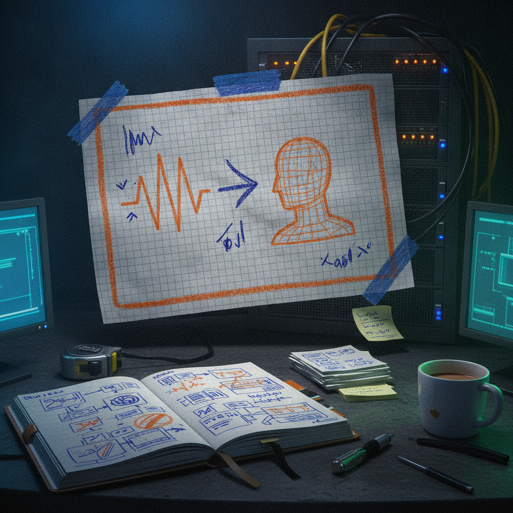

NVIDIA's Audio2Face-3D Turns a Voice Track Into a Full Facial Performance
I stopped scrolling on this one because facial animation is one of those problems that always seemed like it needed a studio, a mocap rig, and a team of animators to get right. Seeing a tool that claims to go straight from audio to a full facial performance made me want to look closer.
What was bookmarked
@tom_doerr posted a link to NVIDIA's Audio2Face-3D repo on GitHub. According to the post, the tool generates high-fidelity 3D facial animation from an audio source, with accurate lip-sync and what the post describes as nuanced emotional expression. The post links directly to the GitHub repo, which is where the actual code and documentation live.
I have not run it myself yet, so everything here is based on what the post and the repo page describe, not hands-on testing.

Why it matters
Facial animation has historically been one of the more expensive, time-consuming parts of making anything with a digital character in it, whether that is a game, an animated short, a virtual assistant, or a livestream avatar. If a tool can take an audio clip and produce a convincing facial performance from it, that changes who can attempt this kind of work. It is not just a studio tool anymore, it is potentially something a solo builder or a small team can fold into a pipeline.
This fits a pattern I keep noticing: AI tools that used to require deep specialized skill are becoming things a smaller team can actually use, as long as they understand the workflow around them. It is also relevant to anyone doing creator work, since a lot of content now involves some kind of digital character, host, or avatar that needs to talk convincingly.
The practical breakdown
What it does: Based on the repo, Audio2Face-3D takes an audio input and produces 3D facial animation output, driving lip movement in sync with the audio and adding expressive detail on top of the basic mouth shapes.
Who it helps: Game developers, animators, virtual avatar creators, and anyone building character-driven content who wants a faster path to believable facial animation without hand-keying every frame.
Why builders should care: If the pipeline is solid, this removes a real bottleneck. Getting lip-sync right by hand is slow and often looks stiff. A tool that handles both sync and emotional nuance from a single audio file is solving two problems at once.
What still needs work (or what I do not know yet): I have not tested output quality myself, and the post does not include benchmarks, sample comparisons, or details on hardware requirements. Tools like this often need a decent GPU and some setup work to get from raw output to something production ready. Worth checking the repo's documentation directly before assuming it is plug and play.
What I would test first: I would want to run a short clip with a range of emotional tones, calm speech, excited speech, something angry, and see how well the expression actually shifts, not just whether the lips match the words.
Rick's take
I like seeing tools like this come out of NVIDIA and land on GitHub where builders can actually poke at the code, not just watch a polished demo video. @tom_doerr has a habit of surfacing tools like this before they show up everywhere else, and this one is a good example of why that is worth paying attention to.
The idea of going from a single audio track to a full facial performance is genuinely useful, not just a flashy demo. If it holds up under real use, it could save a lot of manual animation work for small teams that do not have a mocap budget. I do not have hands-on results yet, so I am curious how it performs outside of whatever conditions NVIDIA tested it in, but that is the kind of thing you only find out by trying it.
What to watch next
I would watch for community testing and side-by-side comparisons once more people get their hands on it, especially from smaller studios and solo creators who do not have NVIDIA's internal resources. That is usually where you learn whether a tool like this is genuinely production ready or still needs a few more iterations before it becomes a normal part of the pipeline.
Source and links
Source: X post by @tom_doerr, https://x.com/i/web/status/2077202852229926944, retrieved on 2026-07-15.
External references: NVIDIA Audio2Face-3D GitHub repo, https://github.com/NVIDIA/Audio2Face-3D